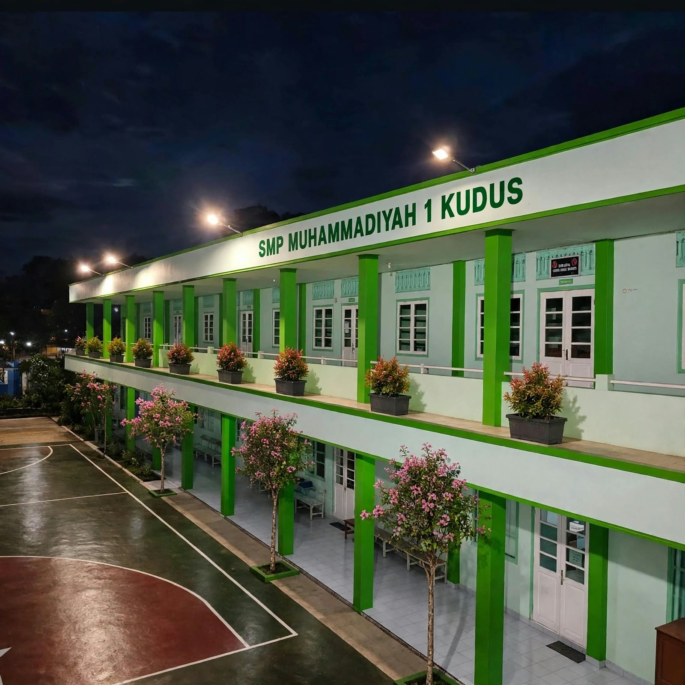
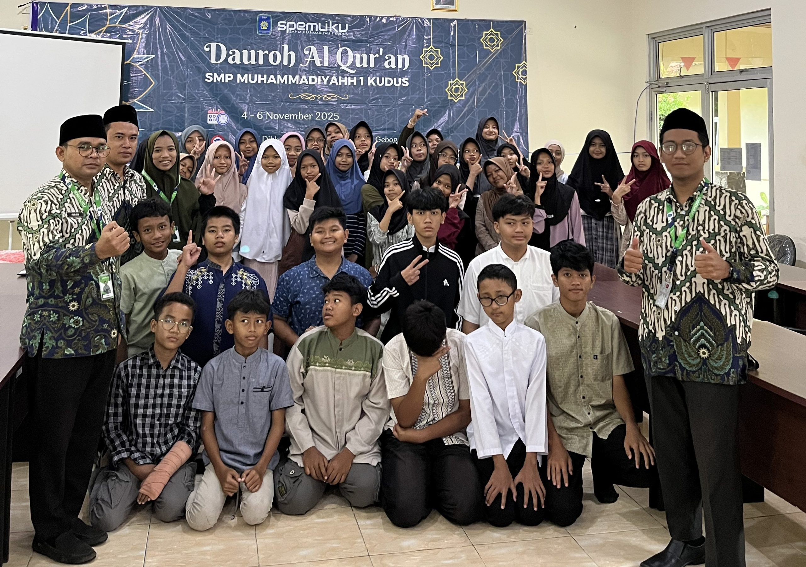
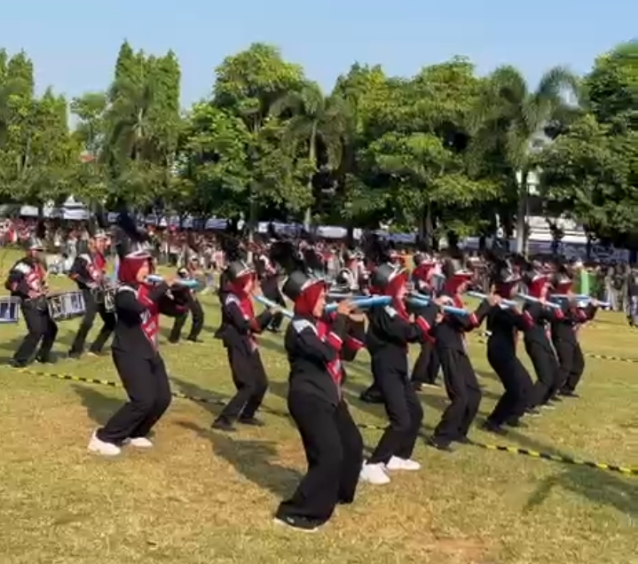
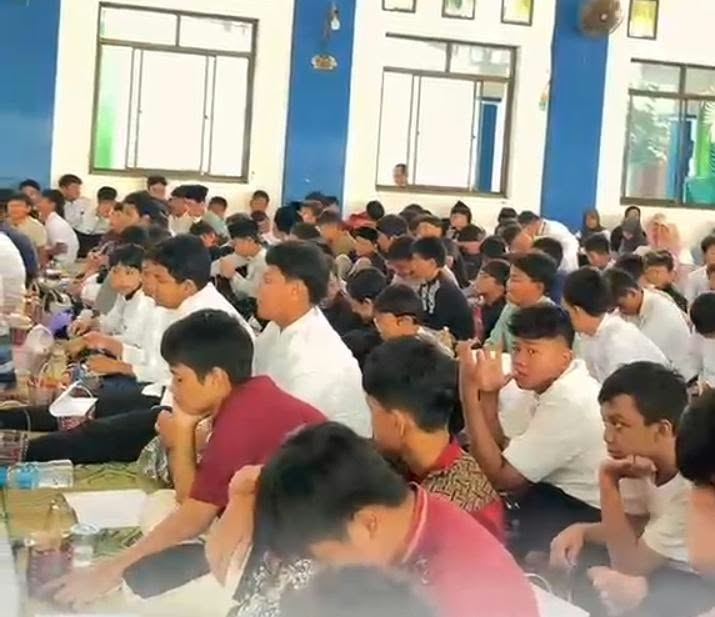
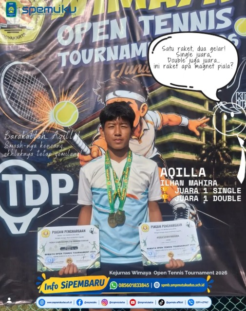
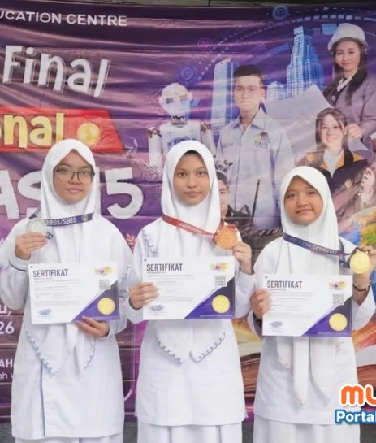
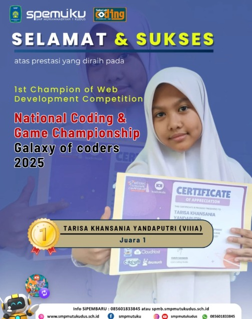

Coding
Anak belajar berpikir sistematis dan berkarya lewat teknologi.
- Scratch & block-based programming
- Python dasar & web sederhana
- Proyek mini: game & website
Output: 2–3 proyek digital per semester
SMP Muhammadiyah 1 Kudus — tempat anak tumbuh cerdas, berakhlak, dan berkarya lewat Reguler sebagai fondasi, Tahfidz sebagai karakter, dan Coding sebagai keterampilan abad 21.

Kami percaya setiap anak punya kekuatan berbeda. Tiga program ini berjalan bersama agar anak tumbuh utuh.
Anak belajar berpikir sistematis dan berkarya lewat teknologi.
Anak menghafal Al-Qur'an dengan metode yang lembut dan konsisten.
Kurikulum nasional yang kuat sebagai fondasi akademik setiap anak.
Reguler adalah fondasi, Tahfidz membentuk karakter, Coding menyiapkan keterampilan abad 21. Ketiganya berjalan bersama, bukan dipilih salah satu.
Berdiri sejak 1946 di Kudus, kota kretek yang menjunjung nilai gotong royong, SMP Muhammadiyah 1 Kudus lahir dari keinginan menyediakan pendidikan yang menyeimbangkan akhlak dan keterampilan. Kini, tiga jalur program kami membantu anak-anak Kudus siap menghadapi dunia yang berubah cepat tanpa kehilangan akar.
Baca cerita lengkap"Anak saya jadi lebih berani bertanya dan lebih rajin mengaji. Guru-gurunya sabar dan dekat dengan anak."

Dauroh Al Qur'an
Karantina Tahfidz Tahunan Siswa Unggulan

Drumband Spemuku
Harmoni Musik Pembentuk Karakter Disiplin

Peringatan hari besar islam
Pentas Seni Islami Maulid Nabi

Juara 1 Tenis Lapangan Nasional
2026 — Meraih podium tertinggi kategori Tunggal dan Ganda pada Kejurnas Piala Wali Kota Madiun.

Juara 1 OMNAS 15 Jawa Tengah
2026 — Menyabet Medali Emas kategori Bahasa Inggris pada olimpiade tingkat Provinsi Jawa Tengah.

Juara 1 Web Development Nasional
2025 — Meraih juara pertama lewat karya website bertema eksplorasi antariksa di tingkat nasional.
Bapak/Ibu yang ingin mengetahui lebih lanjut tentang program dan pendaftaran, kami siap menjawab pertanyaan lewat WhatsApp.
Tanya via WhatsApp